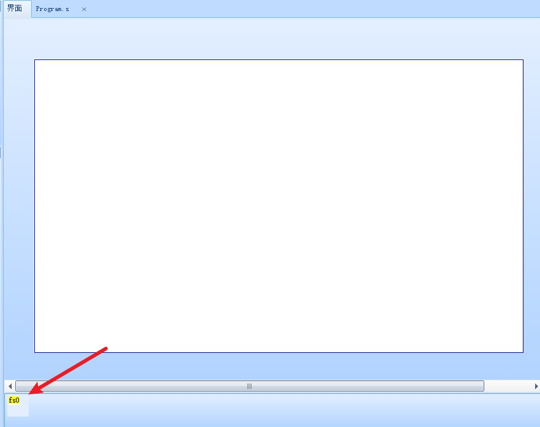
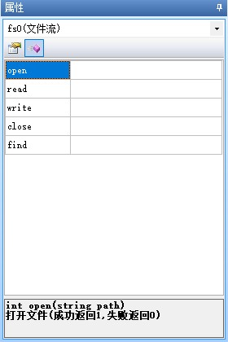

文件流控件
提示
视频教程： 文件流控件使用教程一
提示
视频教程： 文件流控件使用教程二
提示
视频教程： 文件流控件使用教程三
文件流控件仅X2、X3、X5系列支持
文件流控件用于在串口屏上对SD卡中的文件进行读写操作，仅X系列支持，文件流控件只能设置为私有
文件流控件位于特殊控件栏上

文件流控件-使用详解
请先查看 SD卡读写文件流程
文件流关键属性
val-文件流当前数据指针
1、每次使用open方法打开一个文件时，文件流的val数据指针会默认变为0
2、write方法会基于当前的val数据指针的位置写入数据，写入成功后会自动移动val数据指针的位置
3、read方法会基于当前的val数据指针的位置读取数据，读取成功后会自动移动val数据指针的位置
4、find方法查找成功后，会自动移动指针到关键字中第一个字符所在的位置
5、find方法可以查找汉字，如果查找失败，注意检查工程的编码与文件的编码是否一致
qty-文件大小
例-获取当前文件的大小：
n0.val=fs0.qty
en-文件打开状态
例-获取当前文件打开状态，如果是打开的就关闭：
if(fs0.en==1)
{
fs0.close()
}
文件流控件有哪些方法

文件流控件有5个方法，分别为open，read，write，close，find
open：打开文件(成功返回1,失败返回0)
read：从当前流读数据(成功返回1,失败返回0,从当前数据指针[val属性]位置开始读,读完以后指针将自动移动相应的长度)
write：将数据写入当前流(成功返回1,失败返回0,从当前数据指针[val属性]位置开始写,写完以后指针将自动移动相应的长度)
close：关闭文件流(成功返回1,失败返回0,文件打开读写操作完成后一定要记得关闭文件,同一个文件在打开后,关闭之前,是不能被另外一个文件流控件打开的)
find：按关键字查询并定位文件流指针(查询成功返回1,失败返回0,从当前流的当前数据指针[val属性]位置开始查询关键字,如果查询成功,数据指针将会移动到关键字中第一个字符处;如果查询失败保持数据当前指针不变)
open-打开文件
int open(string path)
成功返回1,失败返回0
path 文件路径如“sd0/aa.txt”
例：
fs0.open("sd0/aa.txt") //打开sd0下aa.txt
因为有返回值，所以可以用一个变量来判断是否打开成功
sys0=fs0.open("sd0/aa.txt")
if(sys0==1)
{
//文件打开成功
}
注意
1、文件打开读写操作完成后一定要记得关闭文件，同一个文件在打开后，关闭之前，是不能被另外一个文件流控件打开的。
2、文件每次打开，文件流属性val都会被赋值为0。
read-从文件流读取数据
int read(object att,int star,int lenth)
读取成功返回1，失败返回0
att 变量名称
star 变量起始地址(一般为0)
lenth 读入数据长度
文件流读取-示例
以下代码将会从文件的100地址处读取10个字节，读取完毕后，文件流的指针（fs0.val）会自动变为110
fs0.val=100 //设置读取的位置
fs0.read(va2.txt,0,10) //读取10个字节,将数据放入va2.txt
注意
起始地址不为0时，若此时文本控件为空文本，即首字符为”\0”，此时是读取成功的，但是文本控件的第一个数据是”\0”，被判断为字符串已经结束了，因此还是显示空白文本。
读取要注意控件属性(txt_maxl),读取数据长度超过范围，会读取失败，返回0，无法显示读取的内容。
读取成功，文件流指针会自动增加。
write-将数据写入文件流
int write(object att,int star,int lenth)
写入成功返回1，失败返回0
att 变量名称
star 变量起始地址(一般为0)
lenth 写入数据长度
文件流写入-示例
以下代码将会从文件的1000地址处读取100个字节，读取完毕后，文件流的指针（fs0.val）会自动变为1100
fs0.val=1000 //设置写入的位置
fs0.write(va2.txt,0,100) //将va2.txt的字符内容写入当前打开的文件中
注意
写入成功，文件流指针会自动增加
变量起始地址不为0时，写入变量的起始地址，不是文件的起始位置。
t0.txt="abcd123456"
fs0.write(t0.txt,2,10) //此时写入的是cd123456,长度不足的部分被写入0x00
close-关闭文件流
int close()
成功返回1,失败返回0
文件打开读写操作完成后一定要记得关闭文件,同一个文件在打开后,关闭之前,是不能被另外一个文件流控件打开的
文件流关闭-示例
if(fs0.en==1)
{
fs0.close()
}
find-按关键字查询并定位文件流指针
int find(string key)
成功返回1，失败返回0
key 关键字字符串变量/常量
文件流查找-示例
t0.txt="abcd123456"
fs0.write(t0.txt,0,15) //写入成功后fs0.val变为15
fs0.val=0 //将文件流指针复位，否则查找不到
sys0=fs0.find("123")
if(sys0==1)
{
n0.val=fs0.val
}
查找结果n0.val=4
注意
从当前流的当前数据指针(val属性)位置开始查询关键字，如果查询成功，数据指针将会移动到关键字中第一个字符串：如果查询失败保持数据当前指针不变
文件流控件-常见问题
在电脑模拟器上是正常打开的，但是下载到串口屏后总是提示打开失败
请按以下步骤进行检查
1、串口屏上是否插入了SD卡
2、SD卡是否超过32GB，请勿使用超过32GB的SD卡（例如：512M、1GB、2GB、4GB、8GB、16GB、32GB都是可用的）
3、SD卡的文件格式是否是FAT32，目前只支持FAT32格式
在电脑模拟器上读取到的数据和串口屏上的数据不一致
电脑上在创建文件时，会自动将整个文件都初始化为0x00,但是在串口屏上并不会
这是因为电脑的cpu是多线程的且电脑的性能远远高于串口屏，而串口屏是单线程
如果串口屏也自动初始化整个文件，当用户创建比较大的文件，如1GB的文件时，串口屏将会因为初始化文件的原因卡住一段时间，可能几分钟到十几分钟不等，取决于SD卡性能
如有需求，可以按照下面的方法来初始化文件
//新建文件，并初始化整个文件
newfile "sd0/1.txt",4096
for(sys0=0;sys0<=1024;sys0++)
{
//循环1024次，每次写入4字节，总共写入4096个字节，将0-4095初始化为0x00
fs0.write(0,0,4)
}
文件流控件如何跨页面调用同一个文件
文件流控件只能是私有的，不能跨页面调用，因此只能在当前页面调用文件。
需要跨页面调用同一个文件的情况下，请使用以下方法。
用一个全局文本控件记录当前文件流控件调用的文件位置。
用一个全局数字控件记录当前文件流控件的val属性。
每个需要用到文件流读写的页面都要添加一个文件流控件。
当跳转到另一个页面时，重新通过全局文本控件打开之前的文件，重新通过全局数字控件赋值给新的文件流控件的val属性即可进行读写,读写完毕后关闭文件流。
以上方法也可以用于一个文件流控件同时操作记录多个文件的名称以及val属性。
文件流控件-样例工程下载
演示工程下载链接：
文件流控件-相关链接
哪些控件属性可以运行中修改，哪些不能运行中修改，绿色属性和黑色属性有什么区别？
文件流控件-属性详解
提示
绿色属性可以通过上位机或者串口屏指令进行修改，黑色属性只能在上位机中修改或者不可修改，可通过上位机进行修改指“选中控件后通过属性栏修改控件的属性”
type属性 -控件类型，固定值，不同类型的控件type值不同，相同类型的控件type值相同，可读，不可通过上位机修改，不可通过指令修改。参考： 控件属性-控件id对照表
id属性 -控件ID，可通过上位机左上角的上下箭头置顶或置底，可读，可通过上位机修改左上角的箭头置顶或置地间接修改，不可通过指令修改。参考： 如何更改控件的前后图层关系
objname属性 -控件名称。不可读，可通过上位机进行修改，不可通过指令更改。
vscope属性 -内存占用(私有占用只能在当前页面被访问，全局占用可以在所有页面被访问)，当设置为私有时，跳转页面后，该控件占用的内存会被释放，重新返回该页面后该控件会恢复到最初的设置。可读，可通过上位机进行修改，不可通过指令更改。参考：跨页面赋值，全局变量操作
文件流控件的vscope属性仅能为私有。
val属性 -此文件流当前数据指针(打开文件时恢复为0,读写操作过程中自动移动,支持手动设置)
qty属性 -文件大小(运行中根据实际打开的文件自动更新,只可获取不可设置)
en属性 -文件打开状态(只可获取不可设置)
文件流控件-方法详解
open方法 - int open(string path) 打开文件(成功返回1,失败返回0)
read方法 - int read(object att,int star,int lenth) 从当前流读数据(成功返回1,失败返回0,从当前数据指针[val属性]位置开始读,读完以后指针将自动移动相应的长度)
write方法 - int write(object att,int star,int lenth) 将数据写入当前流(成功返回1,失败返回0,从当前数据指针[val属性]位置开始写,写完以后指针将自动移动相应的长度)
close方法 - int close() 关闭文件流(成功返回1,失败返回0,文件打开读写操作完成后一定要记得关闭文件,同一个文件在打开后,关闭之前,是不能被另外一个文件流控件打开的)
find方法 - int find(string key) 按关键字查询并定位文件流指针(查询成功返回1,失败返回0,从当前流的当前数据指针[val属性]位置开始查询关键字,如果查询成功,数据指针将会移动到关键字中第一个字符处;如果查询失败保持数据当前指针不变)